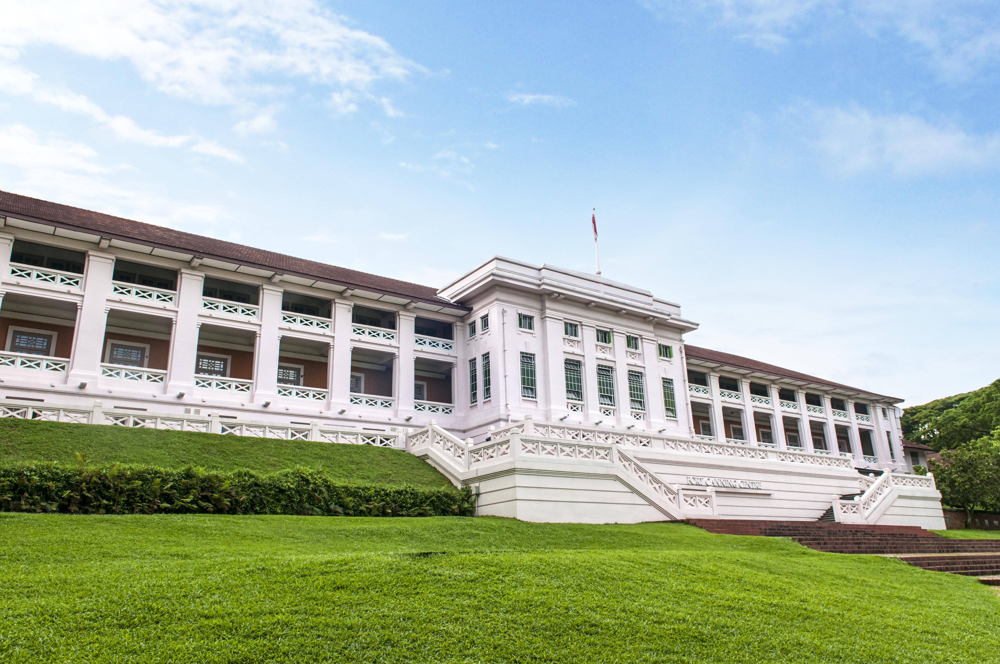
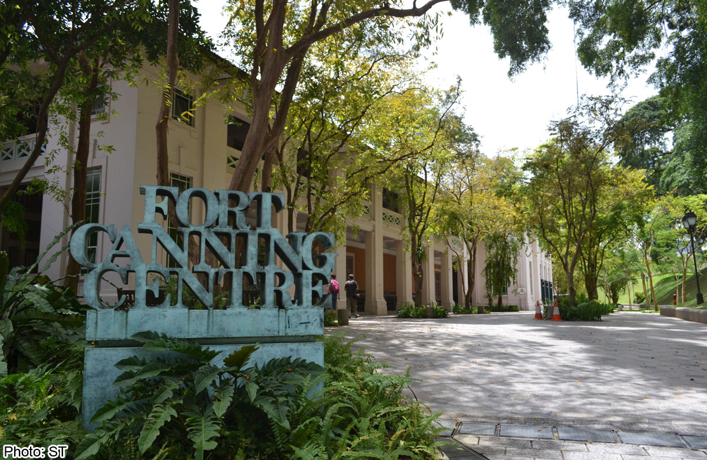

An iconic hilltop landmark, Fort Canning Park has played an essential part in Singapore's history. Today, Fort Canning Park is a family-friendly place for you and your families to immerse yourselves in Singapore's history in a day of outdoor fun!
 Prior to the arrival of Sir Stamford Raffles in 1819, it was known as Bukit Larangan, which meant forbidden hill in Malay. Local settlers were wary of ascending the hill as they believed it was the site of palaces built by their ancestral kings. The Keramat Iskandar Shah at the foot of the hill was believed to be the resting place of the last Malay king of the island, and was venerated by Muslims.
After contemporary archaeological excavation, relics uncovered suggested the existence of a regional trading hub before destruction by foreign forces since the 14th Century. Raffles was impressed by the hill's historical significance and built his first residence on the hill. The residence continued as home to the colony's governors, thus subsequently earning the name Government Hill, until late 1859, when increased security concerns led to the hill taking on a military role, with the demolition of the governor's residence and the building of a fort with an arms store, barracks and a hospital. The fort was named Fort Canning after Viscount Charles John Canning, who was then Governor General and the first Viceroy of India. Government Hill was thus named after the fort, and has remained so ever since even after the end of its military role more than a century later.
Get welcomed by the beautiful sight of the Gothic Gate! Inscribed above the gate are the letters "IHS", which are the first 3 letters of Jesus in Greek.
Experience what it's like to be in the underground British command centre used during WWII with life-sized wax figures in the Battle Box!
Come with your family and friends and have your very own photoshoot with Instagram worthy pictures at the Fort Canning Tree Tunnel!
Learn about Singapore’s evolution from a port city to a maritime trading centre!
Bring your family down for a time of fun at the Fort Canning playground sliding down super long slides at the Fort Canning Jubilee Park!
Need a place to stay?
Hotel Fort Canning offers 5-Star luxury heritage boutique hotel experience in the heart of the business district. At Hotel Fort Canning, a range of rooms and suites are offered to suit your taste and budget.
Book your stay now!
By MRT
Take Exit B and turn right to Fort Canning Park.
Station Take Exit B, cross Penang Road, turn left and keep a lookout for the tunnel leading to Fort Canning Park.
Take Exit E, turn left and walk along Coleman Bridge. Continue along Hill Street and enter the park via the flight of stairs on your left.
Take Exit E, turn back towards Bras Basah Road and take the road crossing. Head straight ahead. Keep a lookout for the escalator leading up to Fort Canning Park.